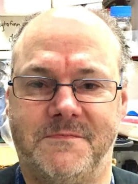
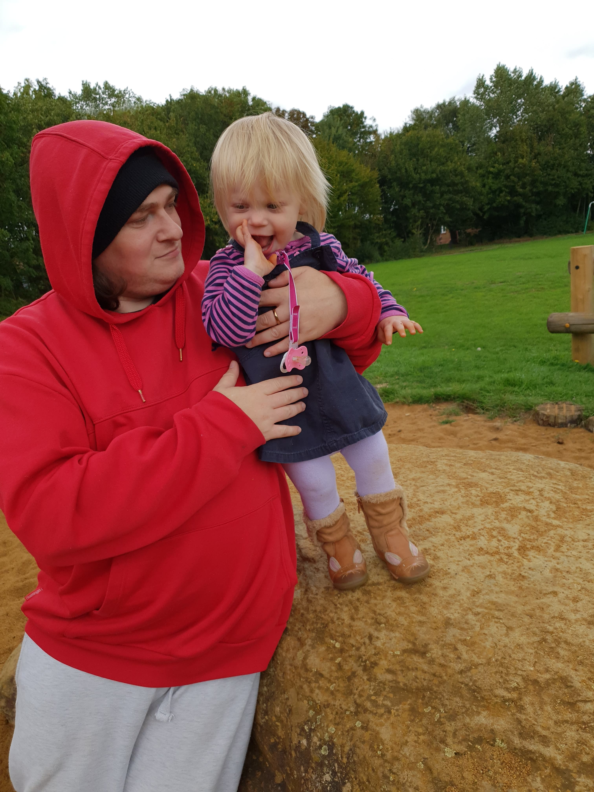

About Us! |
|
An enterprise which started as an idea whilst working at the University of Oxford
The passion, education, lived experience that you we all have is so important, valid and justified. The People Involved: |
|

Colin Larkworthy, HND I'm an autistic individual with lived experience of autism (with a late diagnosis). I'm a 45 year old who works with the University of Oxford as an independent researcher on literature reviews and interpretation of scientific data and information I make presentations on how to empower autistic individuals and Neurotypical to come together and make progress within the neurodiversity and neurodivergent society. To help advise, inform, educate, and empower all to collaborate in co-operation to help change the discourse (for example in our tone, actions, speech) about autistic and neurodiverse individuals. To help at an organisational level, to educate on policy management, human resources and work within differing Acts of Parliament and how to act on and enact procedures, processes and productivity of the organisation to help integrate autistic individuals within the workplace and within the systems of education, housing and benefits and more. |
|

Stevie Eeles Husband to an autistic wife, father to two girls with potential autism. Music maker, sometimes web page maker, likes all sorts of technology. |